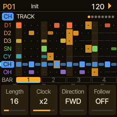

drum machine firmware for the M-VAVE FM-1 · 1 of 2
Black keys numbered 1–11 and white keys 1–16, left to right
HOME grid · black 1 (D1) · white 1 5 9 13 · black 4 (SN) · white 5 13 · black 6 (CH) · white 1 3 5 … 15 · PLAY. Turn PRESETS for kits, OCT+ loads one.
| White 1–16 | Steps of the bar on screen · patterns (pattern page) · rolls and effects (PERF) |
| Black 1–7 | Track: D1 D2 D3 SN CY CH OH (CH and OH share a voice) |
| Black 8–11 | Bar 1–4 · banks on pattern, song, save and load pages · repeat length in PERF |
| OCT− | SHIFT (hold): the screen shows what SHIFT (OCT−) + each key does |
| OCT+ | COPY (hold) · OK in dialogs · casts a spell |
| ALGORITHM | Select the track |
| SELECT | The page; in lists, the row |
| PRESETS | Kit browser; on a sound page, the sound browser |
| KNOB 1–4 | The four cards at the bottom of the screen |
| MASTER | Output volume |
| HOME | Grid → patterns → song |
| EDIT | Model → oscillator → FM → transient |
| ENV | Amp EG → gate → mod EG / velocity |
| SCL | Filter → shape → insert FX |
| LFO | LFO 1 → LFO 2 → random per hit → cross mod / choke |
| GLO | Mixer → config |
| FX | FX bus → reverb (SELECT for the pages) |
| SEQ | Track pages (track, generator, action, groove, bounce, melody, scale) → step edit |
| ARP | PERF: PERFORM → SPELLS → GLOBAL MOD |
| SAVE | Save → load |
| PLAY · REC | Start / stop · record on / off |
| white 1–7 | Play that track's voice |
| white 8 · 9 | KIT: load a kit · MORPH: load the morph target |
| white 10 · 16 | SONG page · PATTERN page |
| white 11 · 12 | PROJECT: load a project · CONFIG |
| white 13 | RELOAD the kit and pattern as saved |
| white 14 | LAST: tap the track's last step (again: all tracks) |
| white 15 | FX |
| track key | Mute / unmute |
| bar key | Track length 16 / 32 / 48 / 64 |
| OCT+ | CLEAR: SELECT a choice, SHIFT (OCT−) + OCT+ again to confirm |
| GLO | Solo / unsolo the selected track |
| HOME | PERF RESET: every performance effect off |
| EDIT | KEYS: the keys play the track's voice |
| SEQ | The links |
| PLAY | Play the song from its start |
| REC · SAVE | Record options · load page |
| bar key | Copy the shown bar there (on the grid: every track) |
| track, track | Copy a track |
| pattern, pattern | Copy a pattern (pattern page) |
| held + knob | Control All (sound page): the knob on every track; let go, then OCT+ reverts, OCT− keeps |
On a sound page, hold a step key and turn a knob: that value for that step only. Turning knobs while recording writes locks too.
Bar height: velocity · outline: chance under 100% · notch: flam · tick below: shift · dot top right: lock · dot top left: condition · bar below: ratchet. Knobs: tempo (down to MIDI: follow clock), shuffle, length, volume.

Tap a white key to select a step (again: on / off). SELECT for the pages.
| Page | K1 | K2 | K3 | K4 |
|---|---|---|---|---|
| STEP | Velocity | Note | Chance | Condition |
| TIMING | Flam | Shift | Length | – |
| LOCKS | Lock 1 | value | Lock 2 | value |
| RATCHET | Hits | Shape | Rate | Fade |
Length: AUTO, 1/32 … 1/2, TIE (slides into the next note). Shape: even or BOUNCE.
Each page has two rows of four knobs: the button again (or SELECT) gives the other row. MODEL picks LXR, Rings or Plaits (D1–D3) or a MICRO type (any track).
| KIT | 64 slots or the library's 128 · OCT+, name, OCT+ |
| PATTERN | 32 · a white key saves to that pattern |
| SONG | 64 · OCT+ |
| MORPH | Saves the mixture you hear; loads as the morph target |
| SOUND | The library's 128: one track's sound |
| PROJECT | 4 · everything |
| FACTORY | The 85 factory kits (load only) |
Naming: K1 position, K2 letter, K3 case; OCT+ saves, OCT− alone goes back.
Pattern page: white key queues a pattern, bar keys pick the bank. Song page: K1 song, K2 row, K3 the row's pattern (END, LOOP), K4 repeats (x1 … x16).
sequencing and performance · 2 of 2
Full manual: dmajka.github.io/elixir/manual
| Page | K1 | K2 | K3 | K4 |
|---|---|---|---|---|
| TRACK | Length | Clock | Direction | Follow |
| GENERATOR | Generator | its settings | ||
| ACTION | Action | Grids map X / Y, chaos · Euclid's second pulse | ||
| GROOVE | Groove | Amount | Humanize | Follow |
| BOUNCE | Bounce | Bnc pitch | – | – |
| MELODY 1 | Shape | Spread | Bias | Steps |
| MELODY 2 | Deja vu | Loop | Length | Len var |
| SCALE | Root | Scale | Follow | – |
Clock: /4 · /3 · /2 · 2/3 · 3/4 · 1x · 4/3 · 3/2 · x2 · x3 · x4. A hat at x2 plays 32nds; 3/4 fits 12 steps in a bar. Add a length of its own (1–64) for polymeters.
| FWD · REV | 1 2 3 4 1 … · 4 3 2 1 4 … |
| PING | 1 2 3 4 3 2 1 2 … (the ends once) |
| PING2 | 1 2 3 4 4 3 2 1 1 2 … (the ends twice) |
| RAND · WALK | Any step · one step either way |
| EUCLID | Length, Hits, Rotate; a second pulse on ACTION (OR, XOR, AND, SUB) |
| MUTATE | Small changes each time round · Freeze stops it |
| TURING | Shift register: Length, Lock (127 repeats), Density |
| CELLULAR | Each time round the next row of rule 0–255 |
| GRIDS | The Grids drum map: Part, Density, Accent |
All but EUCLID play a live copy; COMMIT (ACTION page, OCT+) writes it into the pattern.
SHIFT (OCT−) + key latches it. Black keys mute. Bar keys: repeat length 1/4 … 1/32. ALGORITHM picks the throw track.
| Key | PERFORM | PERFORM 2 |
|---|---|---|
| 1–7 | Roll the track | DRILL: random fast ratchets |
| 8 | FILL | HLF: half time |
| 9 | RPT: repeat | JIT: jitter |
| 10 | FRZ: freeze the delay | CUT: random cuts |
| 11 | T.RV: throw to reverb | SHT: decays short |
| 12 | T.FX: throw to FX bus | PMP: pump off D1 |
| 13 | FB+: feedback push | RES: comb resonator |
| 14 | STP: tape stop | SPC: reverb pad |
| 15 | LP~: low-pass sweep | CRS: crush |
| 16 | HP~: high-pass sweep | REV: reverse |
| Page | K1 | K2 | K3 | K4 |
|---|---|---|---|---|
| PERFORM | Tempo | Roll rate | Morph | SRate |
| MORE | DJ filter | Repeat | Shuffle | Tape time |
| DENSITY | Density | Ghost vel | Build | Vary |
| STUTTER | Chance | Size | Length | Vary |
| 2: SETUP 1 | Drill | Jitter | Cuts | Pump |
| 2: SETUP 2 | Comb | Comb fb | Crush | Reverse |
Hold a roll key and turn K2 on PERFORM: a sweep from 1/4 to 1/192.
| LFO 1–3 | Dest, Depth, Speed (1/16 … 256 bars), Wave · Mode, Trig, Phase |
| MACROS | Four knobs, each a parameter between Min and Max (MACRO SETUP) |
| LINKS | Eight couplings between tracks: When, Target, Effect, Window |
A spell changes the sound and the pattern of the tracks you pick, at random but in a direction.
| 1 Targets | Black keys (bar key 1: all / none) |
| 2 Parts | White keys: what may change |
| 3 Spell | K1 on GRIMOIRE (NONE: plain chance) |
| 4 Cast | COPY (OCT+) · again rolls again |
| 5 Undo / keep | SHIFT (OCT−) alone takes it back · bar key 2 keeps it |
| Sound (white 1–8) | Pattern (white 9–16) | ||
|---|---|---|---|
| 1 PIT | pitch | 9 HIT | which steps play |
| 2 OSC | osc, FM, models | 10 ACC | accents |
| 3 TRN | transient | 11 PRB | chance, conditions |
| 4 ENV | envelopes, level | 12 TIM | timing, flams |
| 5 FLT | filter | 13 RAT | ratchets |
| 6 DRV | drive, shaper, bits | 14 NOT | notes |
| 7 FX | sends, pan, insert | 15 LEN | length, clock, direction |
| 8 MOD | random, LFO 2, xmod | 16 LNK | links, generators |
| GLO | Volume, pan, FX send, reverb send (2 pages each) |
| FX send | How much of the voice goes through the FX bus |
| Reverb send | Feeds the reverb on top of the output |
| FX | FX bus (delay with TAPE modes, dirt, compressor) → reverb |
In: USB and the TRS jack · out: USB. Clock out always; tempo down to MIDI follows clock in. CC n sets parameter n − 1 (as on the LXR), NRPN reaches the rest. Program change 0–31 queues a pattern.